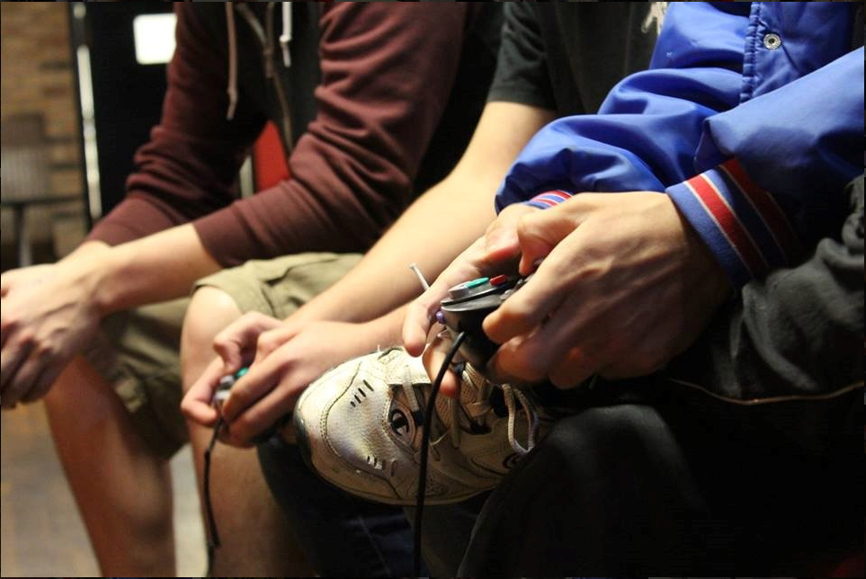

The Smash Brothers promotes the discussion and playing of games in the Super Smash Bros. franchise. Whether you are a casual or competitive player, all are welcome to Settle It In Smash!
We meet at 7:00 pm on Thursdays!
We may replace our meetings with Tournaments or other events!
Super Smash Bros. 64
Photo of players playing Super Smash Bros. on the Nintendo 64.
Super Smash Bros. is a crossover fighting video game developed by HAL Laboratory and published by Nintendo for the Nintendo 64. It was first released in Japan on January 21, 1999, in North America on April 26, 1999, and in Europe on November 19, 1999. The first game in the Super Smash Bros. series, it is a crossover between several different Nintendo franchises, including Mario, The Legend of Zelda, Star Fox, Yoshi, Donkey Kong, Metroid, F-Zero, Mother, Kirby, and Pokémon. It presents a cast of characters and locations from these franchises and allows players to use each character's unique skills and the stage's hazards to inflict damage, recover health, and ultimately knock opponents off the stage.
Super Smash Bros. Melee

Handcam image of players using the Gamecube Controller.
Super Smash Bros. Melee is a 2001 crossover fighting video game developed by HAL Laboratory and published by Nintendo for the GameCube. It is the second installment in the Super Smash Bros. series. It also features characters from Nintendo video game franchises such as Mario, The Legend of Zelda, Star Fox, and Pokémon. The stages and gameplay modes reference or take designs from these franchises as well.
Melee includes all playable characters from the first game, and also adds characters from franchises such as Fire Emblem, of which no games had been released outside Japan at the time. Melee's gameplay system offers an unorthodox approach to the fighting game genre, with a counter that measures damage with increasing percentages, representing the knockback the character will experience, rather than a depleting health bar seen in most fighting games. It builds on the first game by adding new gameplay features and playable characters. Following the popularity of its multiplayer gameplay, Melee has been featured in many competitive gaming tournaments and is one of the most popular competitive fighting games. It was first released in Japan in November 2001, in North America in December 2001, in Europe and Australia in May 2002.
Super Smash Bros. Ultimate
Players getting ready to play on multiple setups.
Super Smash Bros. Ultimate (大乱闘スマッシュブラザーズ SPECIAL, Great Fray Smash Brothers Special) often shortened to "SSBU" or "Ultimate" is a crossover fighting game for the Nintendo Switch. It was first teased on March 8th, 2018 at the end of the Nintendo Direct released the same day, and fully revealed on June 12th at E3 2018. It is the fifth installment in the Super Smash Bros. series (sixth if the two versions of Super Smash Bros. 4 are counted as separate games). The game was released worldwide on December 7th, 2018.
A very unprofessional cropped picture of myself, captured on an iPhone 7 Plus.